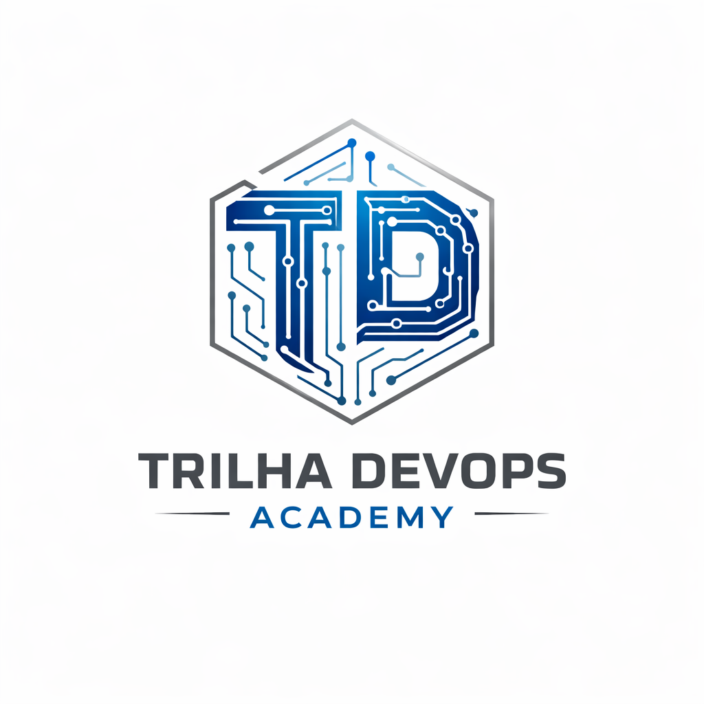
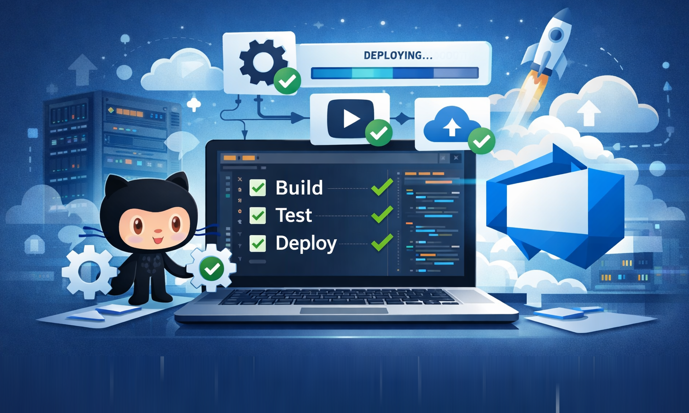

Who want to learn how to automate build and deploy with industry-standard tools.

Workshop GitHub + Azure DevOpsFREE WORKSHOP + CERTIFICATE
See in practice how to structure CI/CD pipelines with clarity, reducing manual tasks and accelerating deliveries.

This workshop is ideal for professionals and teams who want to raise the level of automation in the development cycle.
Who want to learn how to automate build and deploy with industry-standard tools.
Interested in DevOps and CI/CD to make the delivery process more reliable.
Who want to learn GitHub Actions and Azure DevOps in an objective and practical way.
Looking to improve the development, testing and software delivery workflow.
Who want to grow in their career and expand their knowledge of modern engineering practices.
During the workshop, you will have hands-on contact with the pillars of automation and CI/CD best practices.
Marcel Levinspuhl is a technology professional with over 20 years of experience in software development, engineering and environment automation. He worked in the Brazilian market at technology companies and today works in the Irish market focused on modern DevOps practices, automation and cloud.
With solid experience in Java and .NET, he built a career that combines deep technical knowledge, a practical vision of the full software development lifecycle and a strong ability to transform complex processes into more agile, organised and efficient workflows.
In the workshop, he shares that experience in an applied way, showing how tools such as GitHub and Azure DevOps can be used in practice to automate essential stages of development.
Straight-to-the-point content, focused on execution.
1 hour of immersive, application-oriented session.
Online live event, via Teams.
Limited to keep the session dynamic.
To be announced soon. Secure your free spot and register now!
Issued at the end of the course. Free and internationally valid.
In just 1 hour, see how to structure a real build, test and deploy pipeline using Azure DevOps Express with a GitHub repository.